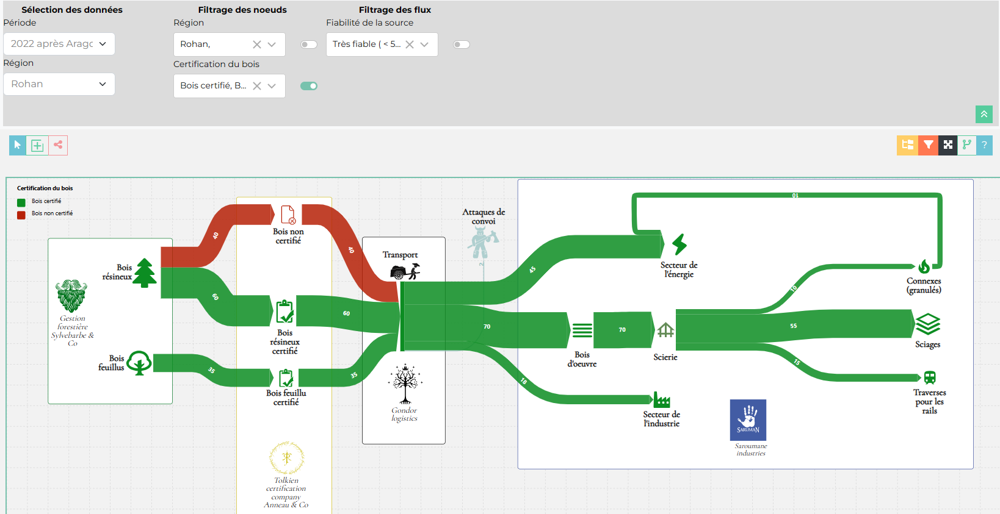
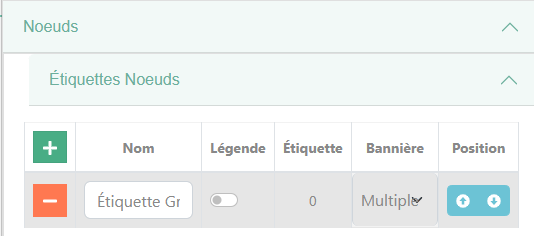
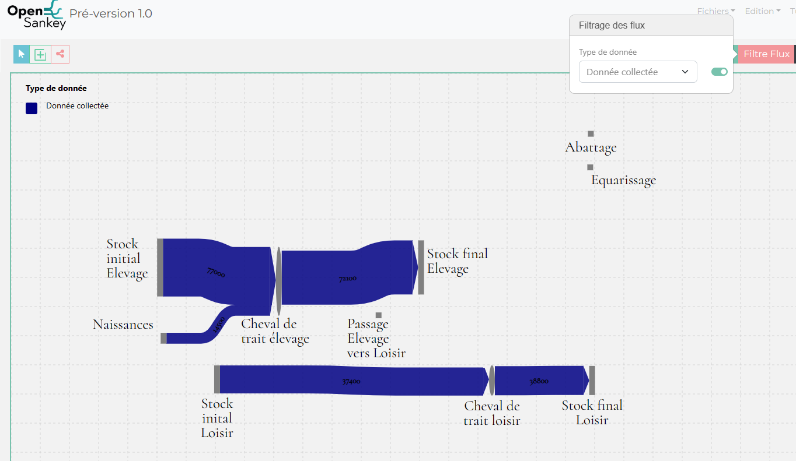
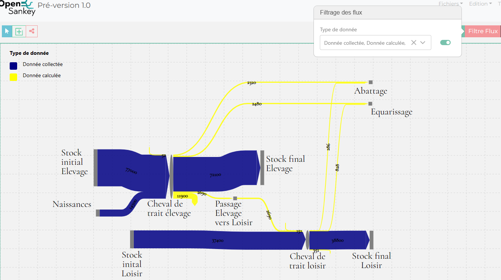
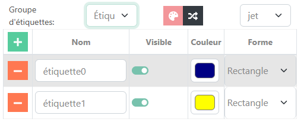

Edition étiquettes
Qu’est-ce qu’une étiquette ?
Dans opensankey une étiquette et un élément d’une catégorie (appelé groupe d’étiquettes) permettant d’associer un élément du diagramme à un groupe.
{kind=link}

Dans cet exemple nous avons décidé d’afficher les étiquettes du groupe certification du bois qui est un groupe d’étiquette de noeuds. Nous voyons donc les noeuds selon leur type de certification. Les différents tags ont leur propre couleur qui prennent le dessus sur la couleur des éléments pour pouvoir les distinguer.
Quels sont les différents type d’étiquette
Il existe des étiquettes pour les noeuds, les flux et les données. La structure des étiquettes est la même pour tous les types mais leurs comportements peuvent varier. Avec les étiquettes de flux et noeuds, nous pouvons leurs associer des couleurs, forme et determiner si ils ont visible ou non. (la visibilité est aussi modifiable dans les boutons d’éditon d’étiquettes dans la barre d’édition)
Comment créer des groupes et des étiquettes ?
Groupe d’étiquette

Par défault le diagramme de sankey n’a pas de groupe d’étiquettes, on peut dont en créer en cliquant sur la croix verte. A la suite de l’ajout, une nouvelle ligne apparait sur le tableau contenant le nom du groupe d’étiquette ainsi que d’autre éléments modifiable tel que :
Afficher dans la légende
Le nombre d’étiquette du groupe
Non-existant: Cette option empêche de pouvoir choisire d’afficher l’une des étiquettes du groupe (le menu déroulant n’est pas présent)
Unique: Cette option permet d’afficher qu’une seul étiquette du groupe
Multiple: Cette option permet d’afficher plusieurs étiquettes du groupe
La position des groupes de noeuds dans la liste des menu déroulant de la barre d’édition
Exemple en Unique:

Exemple en Multiple:

Etiquette

Après avoir crée des groupes d’étiquettes et au dessus du tableau des étiquettes il y a :
un sélecteur où l’on peut choisire le groupe dans lequel on ajoutera, supprimera ou modifira des étiquettes
un bouton pour associer des une palette de couleur aleatoire aux étiquettes
un bouton pour mélanger les couleurs attribués aux étiquettes
un sélecteur pour associer une palette de couleur pré-défini
Ensuite dans le tableau, il y a :
un champ pour modifier le nom de l’étiquette
un checkbox pour** afficher ou non l’étiquette** sur le diagramme
une couleur associer à l’étiquette
la forme de l’élément quand le tag est affiché (uniquement pour les étiquettes de noeud)